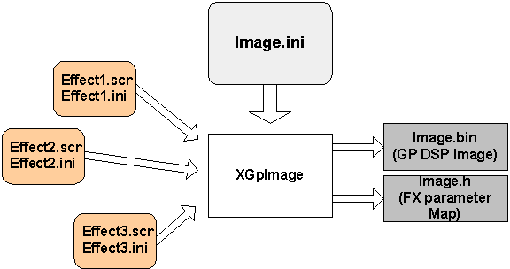
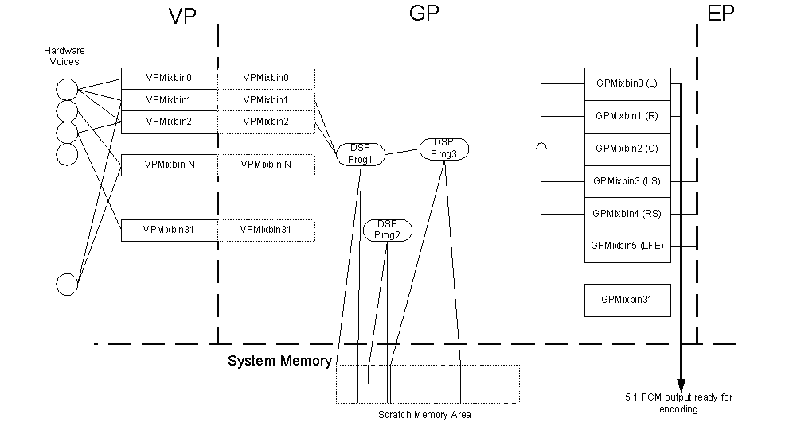

The XGPImage tool takes as input an .ini file that describes the layout of the GP DSP program. It outputs a binary image of the DSP program image that can be read by Microsoft® DirectSound®.
USAGE: xgpimage ini binfile header
| Option | Description |
|---|---|
| ini | The .ini description file |
| binfile | The binary image to generate |
| header | File name of the header file to generate |
| -? | Display usage |
The Xbox Media Communications Processor (Xbox MCP) contains a programmable DSP as one of its three digital signal processors called the Global Processor (GP) DSP. Xbox system software provides several commonly used audio effects for use with Xbox games. These effects need to be configured and set up to interact properly with the rest of DirectSound. In addition, custom DSP programs may be written and run on the GP DSP. These programs typically are used for audio effects processing (such as reverb and chorus) as well as for creating the final multichannel output stream.
The GP DSP has its own memory spaces (one program and two data memory spaces). To run code on the GP DSP, an image must be made of the program memory image. The image contains each of the individual DSP effect programs the game developer wishes to use. This image is then downloaded to the GP DSP's program memory ("P" memory) by DirectSound. For most DSP algorithms, parameters must be updated (for example, reverberation settings). This requires a map of where each effects parameter is in DSP data memories (X memory and Y memory). Finally, the DSP programs may use areas of system memory for various reasons, typically when on-chip memory is insufficient (for example, for reverb delay lines). This memory must be managed by DirectSound as well.
XGPImage addresses each of these issues. XGPImage takes as input an .ini file which describes the layout of the GP DSP program. It outputs a binary image of the DSP program image that can be read by DirectSound. It also outputs a .h file that is used let DirectSound know how to update DSP program parameters. The .ini file specifies each effect, where the effect inputs come from, and where the effect outputs go. It also provides for easy effects chaining.
Effects themselves are specified by a pair of files. The first is a scrambled binary image of the DSP program code for the effect. The second is called the "Effects State" file and is an .ini file. This file, created by the provider of the DSP program, specifies memory and processor usage as well as some other information. By convention, these files are named effect.scr and effect.ini.
The following figure shows the input and output files used and created by XGPImage.

Audio data is generated by hardware voices (oscillators) in the voice processor (VP). Each oscillator can route and mix its output to up to 8 of the 32 VP mixbins within the VP. The GP then reads data from the 32 mixbins, performs whatever processing is necessary, and places the final 5.1 pulse code modulator (PCM) output into six GP mixbins. The six GP mixbins represent the final data to be sent to the Dolby® Encoders and therefore represent what users ultimately hear from their speakers. The GP also uses a certain amount of main system memory (called "scratch space") for some of its processing.
Eleven of the 32 VP mixbins are reserved by DirectSound (VPMixbins 0–10).VP mixbins 0–5 represent [left, right, center, LFE, left surround, right surround] speakers, VP mixbins 6–9 are used for 3D crosstalk cancellation, and VP mixbin 10 is used for Interactive 3D Level 2 (I3DL2) processing. Note that by default, VP mixbins 0–6 are sent to GP mixbins 0–6. A diagram of the basic VP/GP flow is shown in the figure below.

The XGPImage tool depends on two environment variables (_XGPIMAGE_DSP_CODE_PATH and _XGPIMAGE_INI_PATH) being set in order to locate the scrambled DSP effect images and their state .ini files.
The following example shows the usual settings for these environment variables.
_XGPIMAGE_DSP_CODE_PATH=C:\Program Files\Microsoft Xbox SDK\source\DSound\dsp\bin _XGPIMAGE_INI_PATH=C:\Program Files\Microsoft Xbox SDK\source\DSound\dsp\ini
Note Setting these environment variables is unnecessary if you use fully qualified paths to your scrambled DSP effect images and their state .ini files.
The .ini file provides the architecture of the GP image created. An .ini file looks something like the following:
[Main] FriendlyName List of Effect Chain Graphs TempBin Count [EffectsChain1] Effects List [Effects Chain Effect1 Description] Effects files, definitions, input/output routing [Effects Chain Effect2 Description] ... [Effects Chain 2] ...
Every XGPImage .ini file must have a [Main] section. This section defines the friendly name for the DSP image and sets how many effects chain graphs are defined by the configuration file. The friendly name is set with the IMAGE_FRENDLY_NAME keyword. Each graph must be specified with the GRAPH keyword.
Friendly name for effects description. This will be used to create the output .h file for referencing effects using DirectSound. For example:
IMAGE_FRIENDLY_NAME = MyFxGraphs
Number of temporary mixing locations to allocate for the entire set of effects chains. For example:
FX_NUMTEMPBINS = 2
Defines a DSP program chain graph, where n specifies the graph number. Each graph in the graph chain must be defined by the GRAPHn directive. For example:
GRAPH0 = MyMixbin15Graph GRAPH1 = MyMixbin17Echo ...
All other sections are based off of those defined in [Main] and are used to define the effects chain graphs.
For each graph defined with the GRAPHn directive, a list of effects, in order, must be specified for the graph. Effects (or any DSP program) are specified by setting the keyword FXn (where n is the effect number) to the name of the effect.
For example, the following declares and names two effects, chorus and flange, in the effects chain MyMixbin15Graph.
[MyMixbin15Graph] // define an effects graph FX0 = Chorus// with chorus FX1 = Flange// and flange
The effects are specified within a section whose name is created from the graphname, FX definition, and FX name. The format of the section name is "Graphname_FXn_Effectname".
To create the effect definition in our example, we would add a section like this:
[MyMixbin15Graph_FX0_Chorus] // Effect definition for chorus
The definition for the effect specifies the binary DSP program image, a "state" definition file, the number of inputs, the number of outputs, and where the effect should receive and send its data. The DSP program image and scratch space definition file are generally supplied for you (unless you are writing your own DSP program, in which case you create these files yourself).
Several keywords are used to specify this information.
Each effect must specify its source (where it reads its data) and destination (where it writes its data). Sources and destinations are specified with any of the following keywords:
The GP mixbins represent data to go from the GP to either the speakers or back to system memory for further processing, usually by another hardware voice. Specifically, sound may be output to the speakers by setting the output to any of the GPMIXBIN_speaker outputs.
Important Note The GPMIXBINS and VPMIXBINS share the same DSP memory. Therefore, be careful when setting GPMIXBIN output destinations and ensure you are not overwriting a VPMIXBIN with valid data in it. Also for this reason, by default, the VPMIXBINs are automatically "connected" to the corresponding GPMIXBINs. Therefore, it is not necessary to explicitly route data from VPMIXBIN_FRONTLEFT to GPMIXBIN_FRONTLEFT; this is done automatically.
For example:
[MyMixbin15Graph_FX0_Chorus] // Effect definition for chorus FX_DSPCODE = c:\DSPBINS\chorus.scr FX_DSPSTATE = c:\DSPBINS\chorus.ini FX_NUMINPUTS = 1 FX_NUMOUTPUTS = 1 FX_INPUT0 = VPMIXBIN_FXSEND0 FX_OUTPUT0 = GPMIXBINFRONT_LEFT